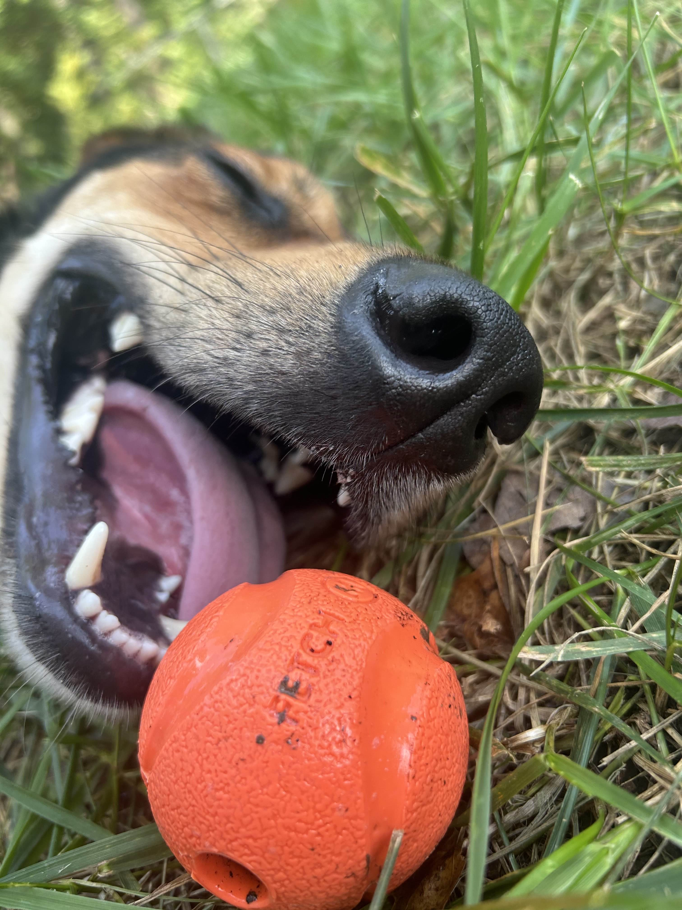
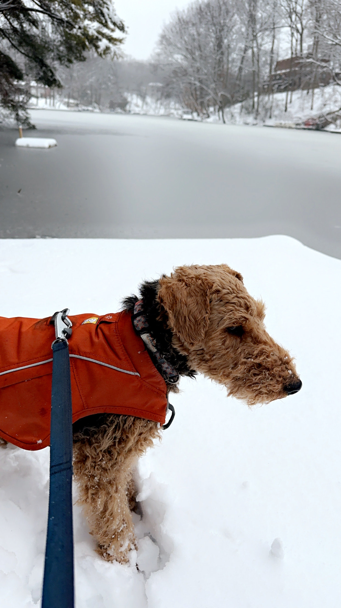
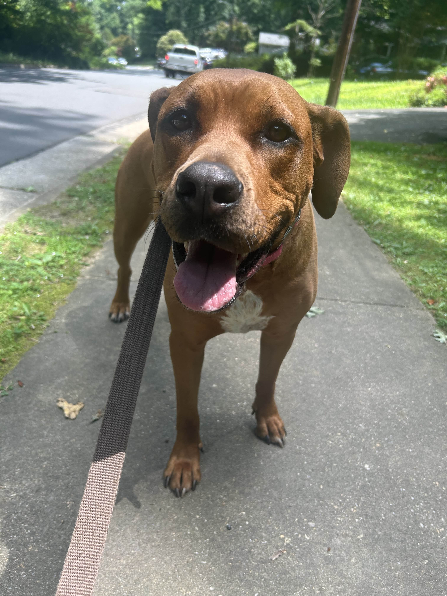
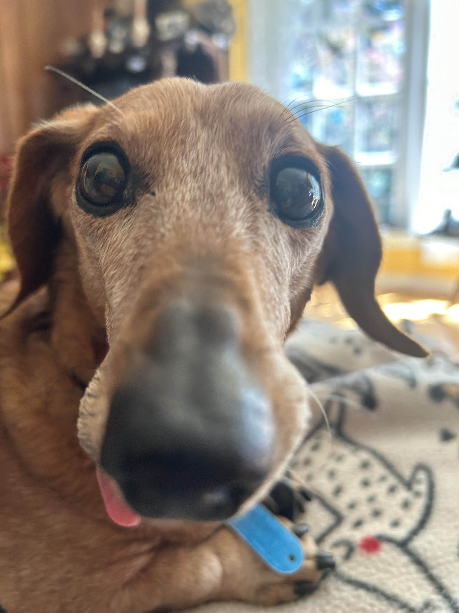
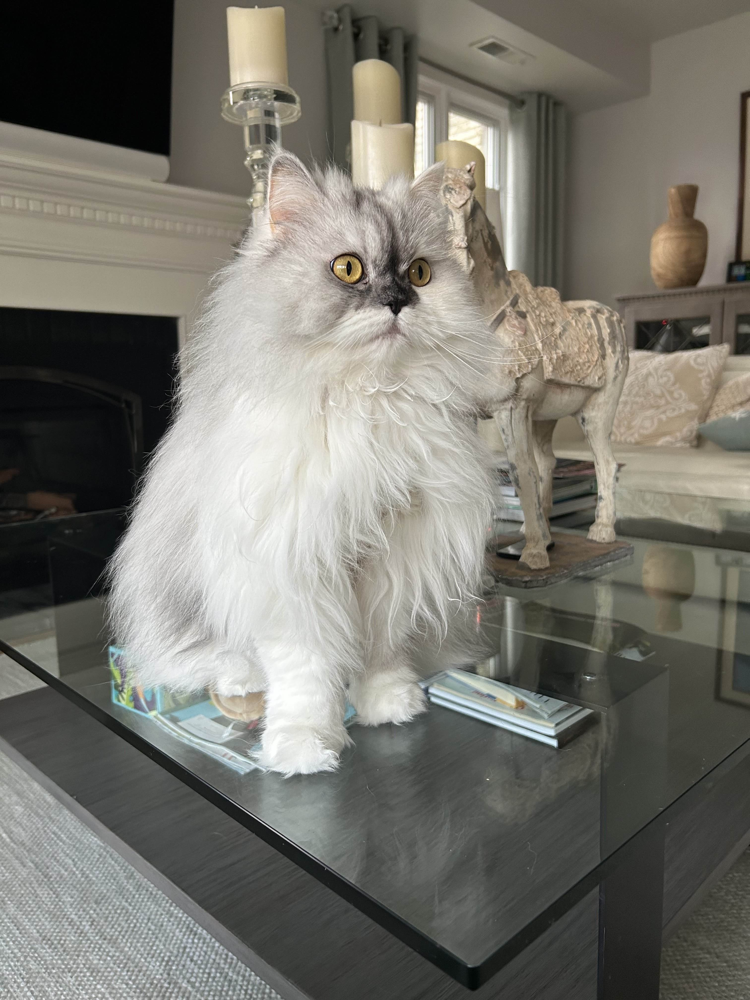
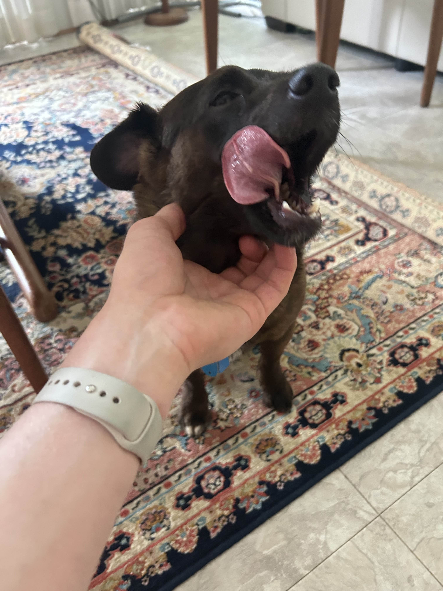
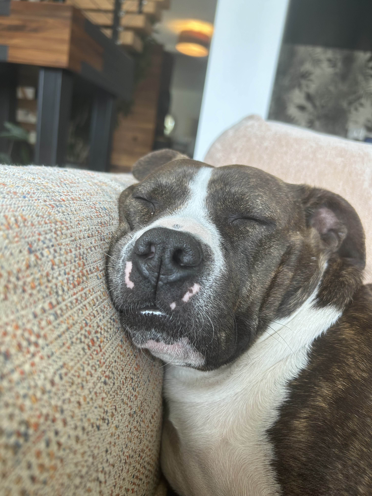

Gallery
Over the years I've cared for many animals. Here are some of those furry friends.
All photos taken by me, shared with animal owners' permission

Ajax relaxing on the lawn with his favorite ball ready at hand

Monty contemplating the ice on the Lake on a cold winter day

Gigi posing for the camera on a bright and sunny day

Slinky showing his signature funny face

Shalla sitting like the queen she is

Shade taking a big yawn

Raya found a comfy couch to lay her face on